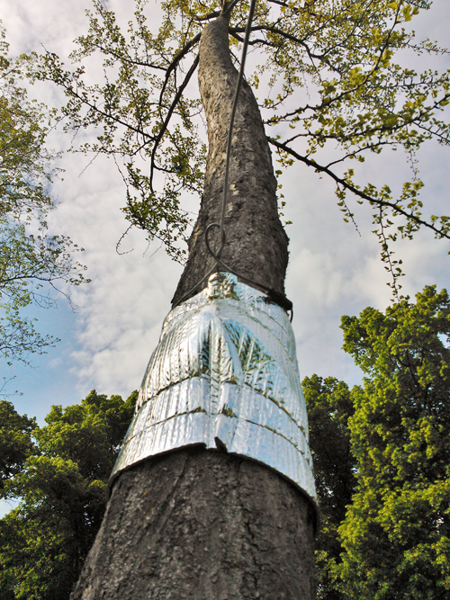
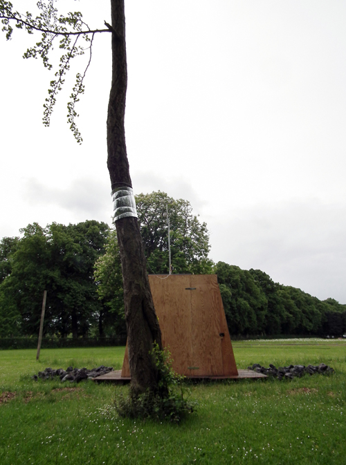
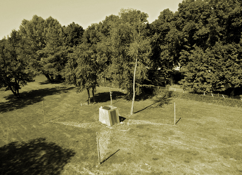

Détail de l'installation, Station affleure 360°, Nicolas Bralet, François Collin et Sabrina Issa, INRA Versailles-Grignon, 2013.
Conçue tel un protocole expérimental, la Station permet de rendre visible les fluctuations climatiques et leurs incidences sur un arbre témoin, le Ginkgo biloba. La vitesse de rotation et la couleur du gyrophare qui surplombe l'installation est liée à l'activité de montée de sève de l'arbre sur le site. En observant la circulation du flux de sève nous obtenons les incidences de facteurs environnementaux sur le métabolisme de la plante. Station Affleure 360° est une plateforme de transduction de signaux physiques et biologiques à l'échelle humaine.
Le projet de recherche-action « Le vivant et son énergie » restitue la transition énergétique sur le plan du sens et du sensible, la démarche adoptée consiste à interroger et expérimenter les liens entre énergie, vivant et développement durable à travers une exposition de créations environnementales sur les espaces verts de l'INRA Versailles-Grignon
Matériaux:
Pin déroulé, écorses de pin, roche volcanique, pallette de bois, plaque de polycarbonate, station météo, gyrophare à LED, capteurs de montée de sève dit de Granier TDP, panneau solaire et montages électroniques, dessins, modélisations, tirages limités.

Détail de l'installation, Station affleure 360°, Nicolas Bralet, François Collin et Sabrina Issa, INRA Versailles-Grignon, 2013.

